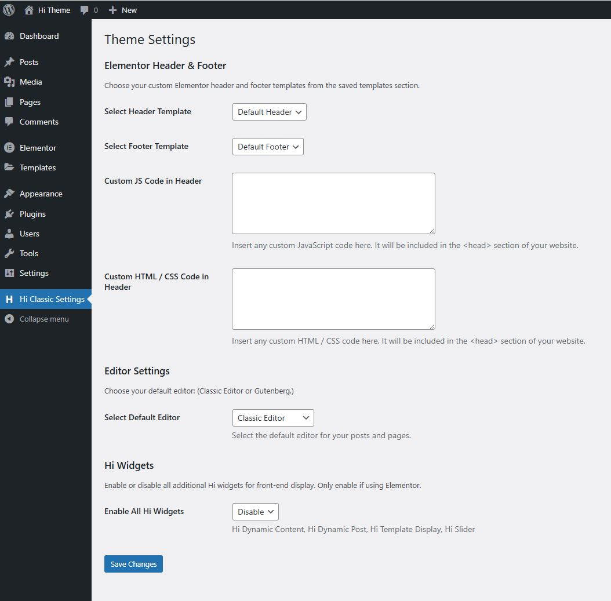

Theme Setting
Elementor Header & Footer Settings
Easily select your preferred header and footer templates from the saved templates section to ensure a seamless and professional look across your website.
Custom Code Integration
Enhance your website’s functionality with custom JavaScript, HTML, and CSS:
Editor Settings
Decide which content editor you want to use by default for posts and pages.
Hi Widgets
Enable or disable additional Hi widgets to enhance your website’s front-end experience. These widgets work exclusively with Elementor. Hi Dynamic Content,Hi Dynamic PostHi,Template Display and Hi Slider